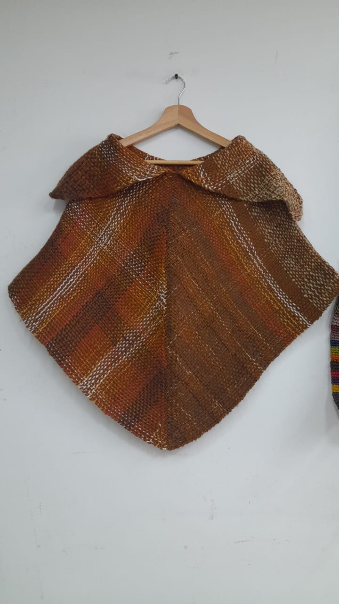

Estado:Disponible
Precio:$450.000
Envuélvete en calidez y estilo con esta ruana artesanal tejida a mano, una pieza única que resalta por sus tonos cálidos en gamas de marrón, cobre y matices naturales.
Su diseño presenta una caída elegante y simétrica, con una textura rica y ligeramente rústica que refleja el trabajo hecho a mano. El cuello amplio añade un toque distintivo y cómodo, perfecto para protegerte del frío sin perder estilo.
Cada hebra cuenta una historia de dedicación y tradición, convirtiendo esta ruana en mucho más que una prenda: es una expresión de identidad y buen gusto